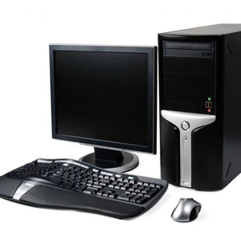

Sys-Plus goal is 100% Customer Satisfaction
Our hands-on approach assures customer needs and expectations are fully met. All Sys-Plus clients are assigned a Project Management Implementation Specialist that will coordinate programming and installation details for a successful implementation and strong relationship.
Download the Teamviewer for Technical support.
About us
Sys-Plus is an IT service company located in GTA (Scarborough), ON with 25 years sales and service experience of desktop computers, laptops, computer peripherals and computer accessories and for the past decade has been providing repair services for clients in Brampton, Mississauga, Toronto and the rest of the GTA.
Just call us and we will be there to solve your computer related problems. We have a team of certified technicians to help you with all of your computer equipment repair needs. Whether it is to repair a single item or support the IT infrastructure of a large corporation, we have the knowledge and manpower to meet your demand.
We can resolve any computer issues, like cleaning viruses, spy ware, tune up slow computers, fix e-mail issues, resolve wireless network issues and etc. At Sys-Plus we are confident in our expert repair and professional service. We take great satisfaction in our unparalleled response times and in delivering the ultimate level of service. The success of our company is due to our absolute commitment to guarantee the best quality service at competitive rates.
Services
Computer Repair
Any Make. Any Model. Any Problem. With one of the fastest repair times in the industry, we repair while you wait….
Security Camera Installation
we also offer computer accessories required for your desktop computers and laptops at competitive prices
Computer Tune Up
Do you need a computer tune up? If your computer is getting slow and sluggish, if it’s freezing all the time…
Laptop, Notebook and Tablet Repairs
From broken screens and parts to software issues, we can repair all makes and models…
Memory and Data Back Up
We all cherish memories. So why not protect them from all the viruses and worms? We help you back up anything…
Network Services
Networking has a number of benefits. Great for home entertainment, multi-player games, internet sharing and file sharing…
Viruses and Spyware
Has your computer performance slowed? Annoying pop ups? There are many signs of a Virus or Spyware infection. Safe guard…
At Home or Business Repair
We can conveniently do repairs from the comfort of your home or business. If you allow us, we can also repair most problems…
Computer Set-Up
We promise to set up your computer according to your preferences so you can easily download and share your music, movies…
Accessories
we also offer computer accessories required for your desktop computers and laptops at competitive prices
Technical Support
Telephone: +1 (416) 321 5995
Mobile: +1 (647) 282 4160
Email: info@sys-plus.net
Fax: 1 ( 416 ) 321 5995
Office
148, Allanford Road,
Toronto,
Ontario,
M1T 2N7,
Canada.
Toronto,
Ontario,
M1T 2N7,
Canada.
Map
- |
- |